AI Academy · Level 2 · Grade 7 · Week 1 · Student lesson
Precision in Algorithms
Learn to understand, design, build, test and explain AI systems responsibly.
Project: Transparent Book Recommender
Before you start
AI-1 Weeks 9–12: trace ordered instructions and repair missing steps.
Plan time to read, investigate and explain. Keep predictions separate from observations.
Student lesson · 1 of 18
Your mission
Start with the target: Translate a short paper calculation into a Python script. Try the recall before opening notes.
Your learning target
I can translate a short paper calculation into a Python script.
I can predict and explain the order of executed statements.
I can keep expected and observed output separate when checking a program.
Remember before reading
Close your notes first. A rough first answer helps us choose the right starting point; it is not a score for your ability.
Without opening the old lesson, explain one key idea from Expo and Defense. Give an example and a mistake that the idea helps you avoid.
After trying, check the relevant lesson or ask your teacher. Change the part of your explanation that the evidence shows was wrong.
Week 1: Precision in Algorithms
Computers follow stated steps, not intended meaning.
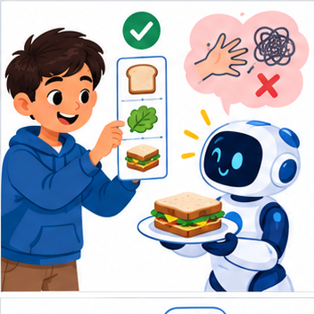
THINKER MISSION
Write two sandwich algorithms; expose hidden assumptions.
Thinker name and date:
Readiness for the connected explanation
Four packs contain six counters each. What steps find and show the total?
This week’s end goal
By the end, I can translate an ordered algorithm into Python and check state after each line.
Student lesson · 2 of 18
Notice the evidence
Investigate the supplied Precision in Algorithms case. Separate observations, given facts and assumptions before choosing an explanation.
PICTURE STORY
Notice → Predict → Explain
Begin with visible evidence. Do not explain more than the picture and information support.
Start with this puzzle
MYSTERY
The learners must use precision in algorithms to solve a problem. What information do they have? What decision or calculation do they make? What would count as evidence that it worked?
Three observations (what you can point to):
My prediction and the clue supporting it:
A closer explanation
In Grade 6 you traced rules on paper. Now you will write a small Python program and check what it actually does. Begin with a counter-packing calculation, not the whole activity adviser.
The requirement is to find the total counters in equal packs and display that total. For this first program, the supplied quantities are whole, nonnegative numbers; it does not yet validate typed input.
Use a teacher-prepared Python 3 editor that can run a saved .py file. Open a new file called counters.py, type the code exactly as shown in the next section, save it, and use the editor’s Run command.
Read the output area separately from the source editor. No account, AI tool, package installation or personal data is needed. If a device is unavailable, trace on paper and label the result predicted rather than executed.
Student lesson · 3 of 18
See how it works
Follow the mechanism for Precision in Algorithms. Connect each labelled input, deciding step and result.
VISUAL MECHANISM
Input → Process → Output
Trace the information. At each stage, ask what changed and how you could test it.
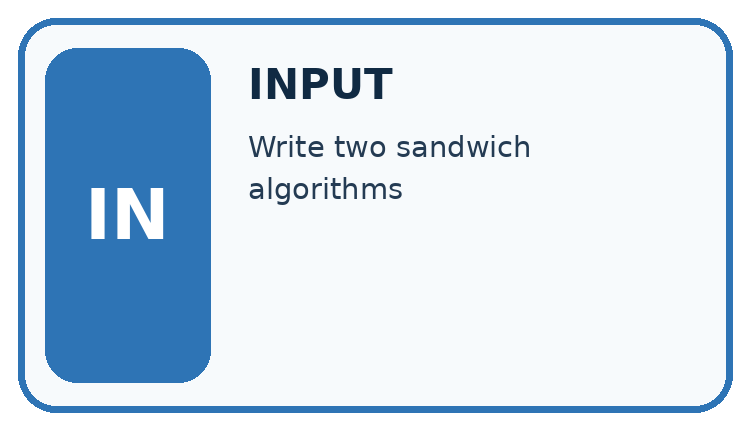
↓
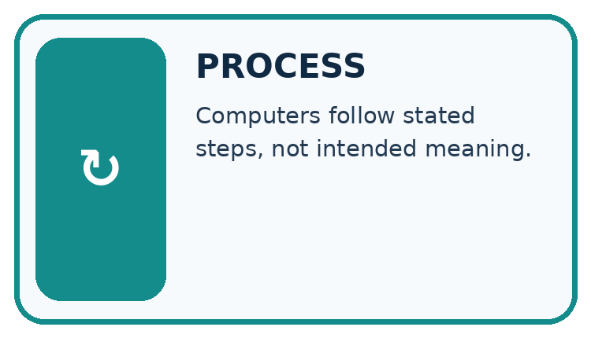
↓
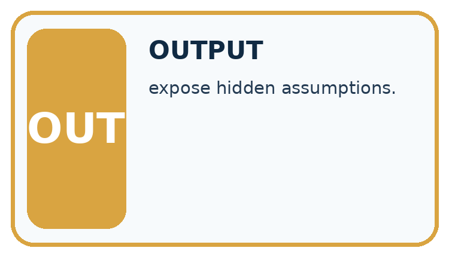
Which stage could fail even when the other two are correct? Explain:
A closer explanation
A calculation from paper to output
packs = 4
per_pack = 6
total = packs * per_pack
print(total)Read the script from top to bottom. The equals sign assigns the value on its right to the name on its left. The star means multiplication. print(total) displays the value of total; it does not display the letters in the name.
Type ordinary straight characters and keep the parentheses. The Python prompt symbols >>> are not part of this saved script.
Connect the picture and the explanation
Point to the input, the deciding step and the result in this week’s visual. Explain the same step in ordinary words. A picture helps when you can say what each part represents.
Student lesson · 4 of 18
Compare the cases
Compare the supplied cases for Precision in Algorithms. Identify the detail that changes the conclusion.
The case to investigate
CASE GALLERY
Four Tests, Four Kinds of Evidence
A system is not understood until it survives more than one comfortable example.


The normal case
NORMAL CASE: predict and name evidence. BOUNDARY CASE: predict and name evidence.


Check missing information
MISSING INFORMATION: predict and name evidence. TRANSFER CASE: predict and name evidence.
Which case is most likely to reveal a hidden assumption? Why?
Change one thing in the pictured case
Change one thing
Change: Set boxes=0, keeping the two loose books.
Predicted result
Prediction: The printed result is 2.
Why the result follows
Reason: 0×5+2=2; there is no rule saying zero boxes means zero loose books.
Student lesson · 5 of 18
Words that unlock the idea
Use the vocabulary of Precision in Algorithms to explain a concrete decision, rather than only memorising definitions.
VOCABULARY LAB
Words You Can Use to Reason
A definition matters when you can recognize the idea, use it, and contrast it with a near-miss.
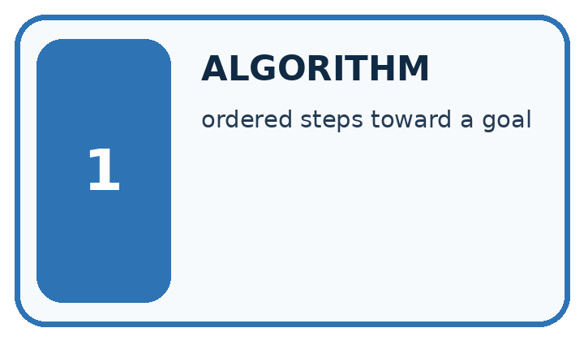
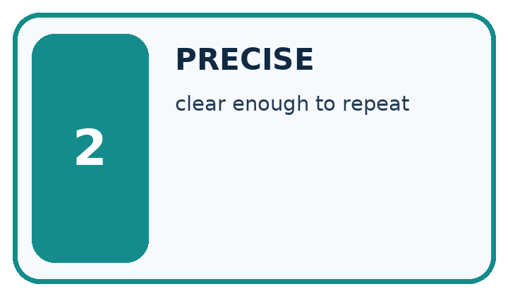
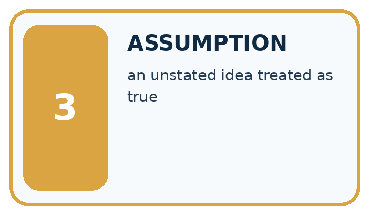
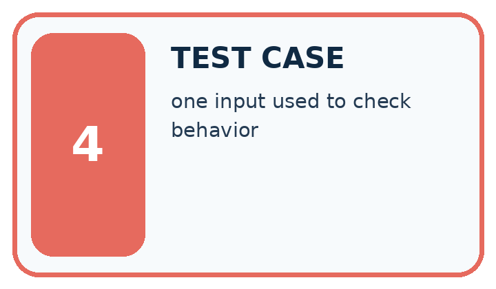
| Word | My own example | Not this / boundary |
|---|---|---|
| algorithm | A specified sequence of steps for performing a task or solving a class of problems. | |
| precise | Specific enough that a reader can distinguish the intended meaning or reproduce the action. | |
| assumption | Something treated as true for reasoning that has not been established by the supplied evidence. | |
| test case | A specified input and conditions with an expected result or measurement rule. |
Words used in the closer explanation
| Word | Meaning |
|---|---|
| Program | Instructions written in a language a computer can execute |
| Interpreter | Software that executes Python instructions |
| Assignment | Binding a name to the value of an expression |
| Output | Information a program displays or returns |
Student lesson · 6 of 18
Follow a worked example
Follow the worked trace for Precision in Algorithms, predict a step, then compare with its explanation.
WORKED EVIDENCE
Reason Step by Step
Predict first. Then check each step. A correct answer without visible reasoning is incomplete evidence.
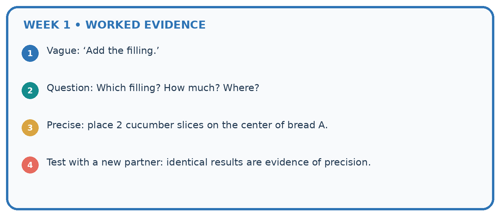
1. Vague: ‘Add the filling.’
2. Question: Which filling? How much? Where?
3. Precise: place 2 cucumber slices on the center of bread A.
4. Test with a new partner: identical results are evidence of precision.
Recalculate, retrace, or restate the reasoning in your own representation:
CHECK Did the evidence answer the exact question? Did the total, path, or source record stay consistent?
A closer explanation
| After line | Names and values | Displayed output |
|---|---|---|
| packs = 4 | packs is 4 | Nothing yet |
| per_pack = 6 | packs is 4; per_pack is 6 | Nothing yet |
| total = packs * per_pack | total is 24 | Nothing yet |
| print(total) | Values are unchanged | 24 |
Worked explanation · Precision in Algorithms
Write 24 as the expected output before running. Then copy the actual output into a separate column. A matching result supports this case, not every possible input.
A saved file may contain an old edit: save again and rerun the whole script. Do not type the expected number into the output record without running.
Learn from the worked case
Cover the result before checking it. Say what is given, choose the procedure, and follow one step at a time. Then uncover the result and explain your first mismatch. Ask why a step is allowed, not only what number it produces.
A pictorial worked case: Precision in Algorithms
A fictional book-box counter has three boxes with five books each and two loose books.
The facts we will use
Supplied facts
Python instructions: boxes=3; total=boxes*5; total=total+2; print(total).
Supplied facts
Run the instructions in this order with ordinary integer arithmetic.

Read the picture one step at a time
Why this result follows
Why the result follows
Assignment replaces a variable’s stored value. In total=total+2, Python first reads the current total on the right, calculates 17, then assigns that result to total on the left.
The equal sign is an instruction here, not a claim that 15 and 17 are mathematically equal. Predict output before running.
What this example does not establish
Keep the stated limit
These statements count supplied books; they do not validate input types or infer stock from measurements.
Keep the stated limit
Read the labelled picture: If print(total) moves before total=total+2, what gets printed for the original input?
Keep the stated limit
Change one thing: Set boxes=0, keeping the two loose books. Predict the result before checking the explanation. What remains the same?
Student lesson · 7 of 18
Find and repair a mistake
Find the unsupported step in the Precision in Algorithms claim and explain a repair using the supplied evidence.
Find the first error
ERROR DETECTIVE
Compare → Diagnose → Repair
Do not patch the answer. Find the earliest unsupported assumption, wrong step, or weak evidence.
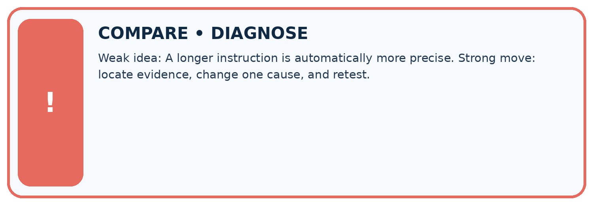
| Evidence record | Expected | Actual | Likely cause / next test |
|---|---|---|---|
| normal case | works | ||
| boundary case | stated rule | ||
| missing input | safe response | ||
| fresh transfer | generalizes |
Repair one cause. Why is this repair better than changing several things?
A closer explanation
Check the claim against the facts
Save the file with the input values, expected and observed outputs, and a short explanation. This program follows a written multiplication rule.
It has not trained a model, predicted somebody’s preferences or checked that real packs contain the stated number. Its conclusion depends on the supplied data. Week 2 examines the values and types behind these names.
Student lesson · 8 of 18
Practise together
Practise Precision in Algorithms with support, then explain the deciding step in your own words.
LOGIC STUDIO
Trace Before You Run
Block code, pseudocode, tables, and diagrams are different ways to expose the same reasoning.

SET evidence_record PREDICT expected_result RUN one normal case and one boundary case COMPARE actual_result with expected_result IF different: locate first cause; change one factor; RETEST EXPLAIN result, limitation, and next safe step
Trace one input. Which line changes the state or chooses a path?
A closer explanation
Change only packs to 5. Predict the result from five groups of six, save, then run the entire file again. The expected output is 30. Keep the original four-pack result beside the new one and label the changed input.
A comment can explain an instruction: Python ignores text after # outside a string. A comment does not change the calculation.
packs = 5 # five equal packs
per_pack = 6
total = packs * per_pack
print(total)A program can run successfully and still solve the wrong problem. Replacing * with + would display 11 for this input, but addition does not count five groups of six.
Use the requirement and a paper calculation to check meaning; the absence of an error message is not proof of correctness.
Practise with less help: Predict then observe
Use workbook W2 for the connected example “From a paper algorithm to Python”. First fill the input and rule boxes. Try the middle steps before asking for a hint. After a hint, try the next step yourself.
| Plan | Do | Check |
|---|---|---|
| What is given? Which rule or procedure applies? | Record each intermediate step. | Does the result follow? What remains unknown? |
Explain your trace to a partner. Your partner points to one step to check. Swap roles on the next case. Each person writes their own explanation.
Check your reasoning
Use the worked case for From a paper algorithm to Python. Proposed explanation: “An equals sign displays the answer”. Decide whether this explanation is supported.
Point to the step or supplied fact that decides; explain your repair if needed.
Answer on your own before discussion. If you are unsure, say which step you need help with.
Explain the picture
If print(total) moves before total=total+2, what gets printed for the original input?
This is supported practice. Keep the separately named independent case for an attempt before feedback.
Student lesson · 9 of 18
Run the investigation
Investigate Precision in Algorithms. Record the prediction, actual observation or labelled paper trace, explanation and next test separately.
EVIDENCE LAB
Predict → Test → Record → Explain
Keep expected and actual results separate. Surprises are useful data when recorded honestly.
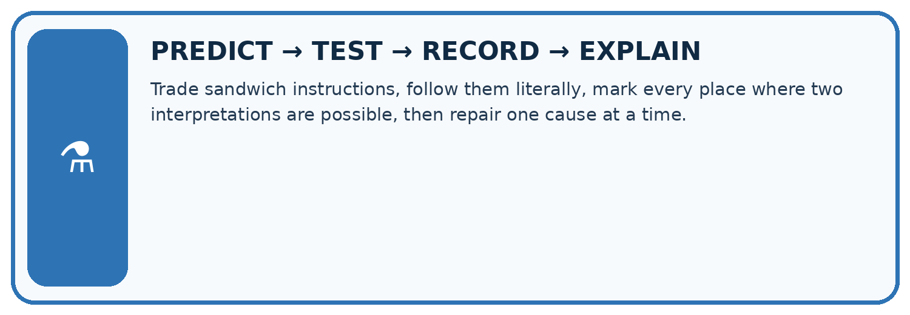
Trade sandwich instructions, follow them literally, mark every place where two interpretations are possible, then repair one cause at a time.
| Test / input | Prediction | Actual | Evidence / calculation | Change or keep? |
|---|---|---|---|---|
| normal | ||||
| boundary | ||||
| missing | ||||
| fresh transfer |
What did the hardest test teach you that the normal test did not?
Plan → try → check
Before trying: what do I expect, and why? While trying: which step could first go wrong? Afterwards: what did I actually observe, and what should change? Keep “not run” if you only traced the procedure.
Student lesson · 10 of 18
Build your understanding
Move from recall to tracing, diagnosis and transfer in Precision in Algorithms. Explain why each step is justified.
MASTERY
From Knowing the Word to Owning the Idea
Move upward only when you can produce evidence without copying the worked example.

1 • NAME: Define the concept without repeating the textbook.
2 • TRACE: Show the information, state, branch, calculation, or evidence path.
3 • APPLY: Solve a different example independently.
4 • CHALLENGE: Find a boundary case, counterexample, or unfair outcome.
5 • EXPLAIN LIMITS: Say when the result should not be trusted or used alone.
My strongest evidence of independent understanding:
Student lesson · 11 of 18
Connect your project
Apply this week’s idea to Transparent Book Recommender. Keep an annotated decision and the evidence supporting it.
CUMULATIVE PROJECT
Transparent Book Recommender
Every week adds one inspectable piece. The system must show how it reached a result.
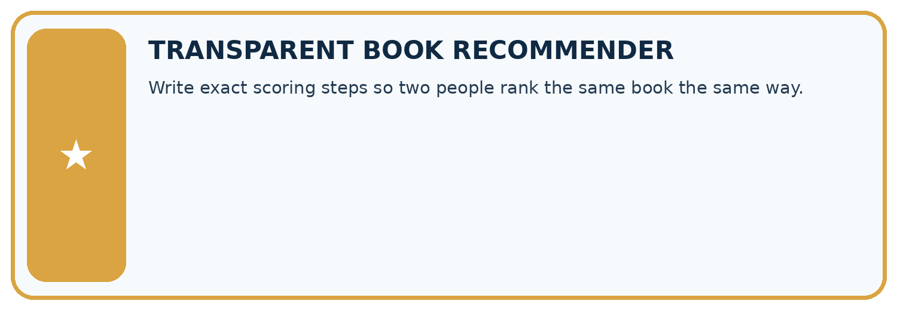
THIS WEEK’S CHECKPOINT Write exact scoring steps so two people rank the same book the same way.
Trace the system
SYSTEM MAP Reader need → allowed inputs → transparent rule or score → ranked candidates → explanation → test record → human decision
What will you add, change, or verify in the project this week?
What should remain under human control?
Responsible design
RESPONSIBLE DESIGN Collect only necessary information. Show uncertainty and limits. Never confuse a ranking with a fact about a person.
Evidence for your project
Use small predicted traces when translating the Transparent Book Recommender’s paper logic into code.
Student lesson · 12 of 18
Show what you know
Use a genuinely new case for independent evidence. Previously discussed examples remain practice; use the separately named independent case before feedback.
Independent evidence
INDEPENDENT MASTERY PROOF
Explain • Transfer • Test • Defend
Complete this page without copying the worked example. Your reasoning matters more than decoration.
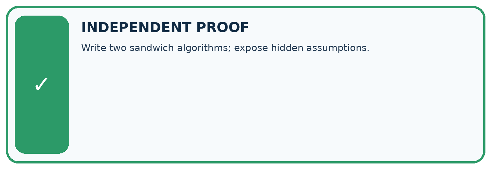
Try a more demanding case
CHALLENGE Write two sandwich algorithms; expose hidden assumptions.
1. My fresh example, trace, calculation, or design:
2. My evidence that it works (include a boundary or missing-data case):
3. One limitation, fairness concern, or situation needing human review:
Check your explanation
SELF-CHECK □ I explained the mechanism □ I used evidence □ I tested a fresh case □ I named a limitation □ I can answer ‘why?’
Student lesson · 13 of 18
Study a complete case
Revisit the complete Precision in Algorithms case for supported practice. Repeated examples do not become fresh assessments.
Week 1 Worked case
Use the supplied details to practise the weekly concept before attempting the independent question. This case extends the illustrated lesson.
The situation
A sandwich algorithm says add spread, close it, cut it, without stating materials or directions.
The question
Expose assumptions and write a precise paper simulation.
Worked explanation
Use two paper bread squares, mark a spoon-sized spread area on one, place the second on top and draw a diagonal cut. State materials and order. No real food or sharp tools are needed.
Explain it in your own words
Which detail supports the answer, and why does it matter?
Trace the supplied case visually
Make hidden instructions explicit
| Evidence or stage | Value or result |
|---|---|
| Materials | Two paper bread squares |
| Spread | Mark one spoon-sized area |
| Close | Place second square on top |
| Cut | Draw a diagonal line |
A sandwich algorithm says add spread, close it, cut it, without stating materials or directions.
Expose assumptions and write a precise paper simulation.
Use two paper bread squares, mark a spoon-sized spread area on one, place the second on top and draw a diagonal cut. State materials and order. No real food or sharp tools are needed.
Student lesson · 14 of 18
Try a new case independently
Attempt the reserved new case before feedback. Record support; the earlier examples below remain additional practice.
Independent case: Transfer the procedure independently
A fictional shelf has 3 trays of 7 tiles each. Write a four-line Python script using trays, per_tray and tiles. Predict its output. Then change only trays to 0 and predict again. Explain why adding the two quantities is wrong.
Attempt this case before feedback. Record any help. Earlier examples below are further practice; a case already practised with feedback cannot establish fresh transfer.
Week 1 Independent application
Close the worked explanation. Apply the idea to this different question without copying.
A robot starts at square 0. Replace move a bit and stop nearby with instructions that put it exactly on square 3 using steps of one square.
My answer, with a trace, calculation or supporting evidence
Create and test
Change one relevant detail. Predict the result before testing. Include a boundary or missing-information case when it helps reveal a limit.
My changed input and expected result
Connect to your project
Write exact scoring steps so two people rank the same book the same way.
The evidence I will keep
Your teacher has the independent answer and scoring criteria. Complete the matching workbook week to keep your practice evidence together.
Transfer practice from the original programme
Write an algorithm for borrowing a classroom book when the book may already be on loan. Include inputs, a no-copy-available outcome and a check that prevents two borrowers receiving the same copy.
Use feedback to improve
Attempt the independent case before hints. Record whether you worked alone, used a hint or followed a model. After feedback, fix the first unsupported step and explain why it changed.
A later check uses a changed case, not a copied answer.
Student lesson · 15 of 18
Your lesson route
Use this map to navigate Precision in Algorithms, connect the goals to tasks and keep one evidence record for each attempt.
Start with this question: A fictional book-box counter has three boxes with five books each and two loose books.
| By the end, I can | How I will show it |
|---|---|
| Translate a short paper calculation into a Python script | Explain the deciding step, show a trace or test, and state one limit. |
| Predict and explain the order of executed statements | Explain the deciding step, show a trace or test, and state one limit. |
| Keep expected and observed output separate when checking a program | Explain the deciding step, show a trace or test, and state one limit. |
Remember → watch and explain → try with help → investigate → try independently → keep project evidence. Your teacher may spread this lesson across several classes.
Keep your first prediction. Compare it with what the evidence shows and explain any change.
Student lesson · 16 of 18
Finish and return
Explain Precision in Algorithms without notes, identify a remaining question and plan a later check with a changed case.
Close your notes. Explain this goal in your own words: Translate a short paper calculation into a Python script
If you are unsure, return to the worked picture and explain one arrow. If you are ready, change an input or assumption and justify your prediction.
Save your workbook evidence. At the next review, try a different case before opening your old answer.
Student lesson · 17 of 18
Supported practice, repair and portfolio
Attempt supported questions before using hints or feedback. Review a missing building block, then keep the completed work.
Use this supported practice once, in the browser or on paper. Keep the reserved independent assessment for a separate first attempt before teacher feedback.
A fictional book-box counter has three boxes with five books each and two loose books.
Practice 1: explain the deciding evidence
Which labelled step matches this detail? The program prints 17 once.
1. Read input
2. Print
3. Multiply
4. Update total
Hint · try first
Hint if needed: Read the steps in the pictorial case. Match the supplied detail to the stage that performs or records it.
Feedback · compare after trying
After your attempt, compare with the supported explanation: Print The program prints 17 once. Assignment replaces a variable’s stored value.
In total=total+2, Python first reads the current total on the right, calculates 17, then assigns that result to total on the left. The equal sign is an instruction here, not a claim that 15 and 17 are mathematically equal.
Predict output before running.
Practice 2: explain the deciding evidence
Changed case · predict first
Changed-case practice: Set boxes=0, keeping the two loose books. Which conclusion is supported by the supplied facts?
1. This one example guarantees correct results for every future input.
2. The printed result is 2.
3. We can decide the result without examining the changed input or the procedure.
Hint · try first
Hint if needed: Use the changed condition and the deciding step in the pictorial trace. The answer must say what follows from those facts.
Feedback · compare after trying
After your attempt, compare with the supported explanation: The printed result is 2. 0×5+2=2; there is no rule saying zero boxes means zero loose books.
Repair a missing building block
Review Expo and Defense (ai-1/36). Goal: Evaluate a saved candidate and a manual baseline fairly. Short practice: Write one defensible success statement and one claim the evidence cannot support..
Return to this week and explain what you changed.
Predict, run and debug
The browser lab lets you edit the supported Python examples already included in this lesson. Predict first, run, inspect the actual output or error, change one input, then run again.
Keep code, predictions, actual results and a reasoned revision together. On paper, label your result as a trace rather than an execution.
Keep your completed work
Use Download completed work in the hosted lesson to export your answers, reflections, practice feedback and code-run evidence. Open the HTML copy to read or print it.
Drafts stay in this browser when storage is available; clear drafts on a shared device.
Student lesson · 18 of 18
Visual concept journey
Explain each Precision in Algorithms graphic using its labels, deciding evidence and relevant limitation.
01. Precision in Algorithms: the case

A fictional book-box counter has three boxes with five books each and two loose books. Supplied facts: Python instructions: boxes=3; total=boxes*5; total=total+2; print(total).
Run the instructions in this order with ordinary integer arithmetic.
Point to the given fact that matters most. Explain why it matters.
02. Follow the deciding steps

Read input: boxes is assigned 3. → Multiply: total becomes 3×5=15. → Update total: total becomes its current value 15 plus 2: 17. → Print: The program prints 17 once.
Point to each numbered stage and explain which recorded input it uses.
03. A calculation from paper to output

A calculation from paper to output. Record pack count | packs = 4 | Name holds 4. Multiply two quantities | total = packs * per_pack | Name holds product. Show the answer | print(total) | Displays the value
Read the labels and values. Explain the relationship the model shows.
04. Change one thing. Trace what follows.

Original case: The program prints 17 once. Changed condition: Set boxes=0, keeping the two loose books. Expected result: The printed result is 2. Reason: 0×5+2=2; there is no rule saying zero boxes means zero loose books.
Predict before checking the worked changed-case result. Name what changed and what the supplied facts allow you to conclude.
05. Connect the explanation to its limit

Assignment replaces a variable’s stored value. In total=total+2, Python first reads the current total on the right, calculates 17, then assigns that result to total on the left.
The equal sign is an instruction here, not a claim that 15 and 17 are mathematically equal. Predict output before running.
Limit: These statements count supplied books; they do not validate input types or infer stock from measurements.
Explain the case, then point to a limit on the claim.
06. Make the idea visible in your project

Use small predicted traces when translating the Transparent Book Recommender’s paper logic into code. Draw your input, deciding step, result and limit.
Supported question: If print(total) moves before total=total+2, what gets printed for the original input?
Draw your project trace and justify the deciding step using evidence.